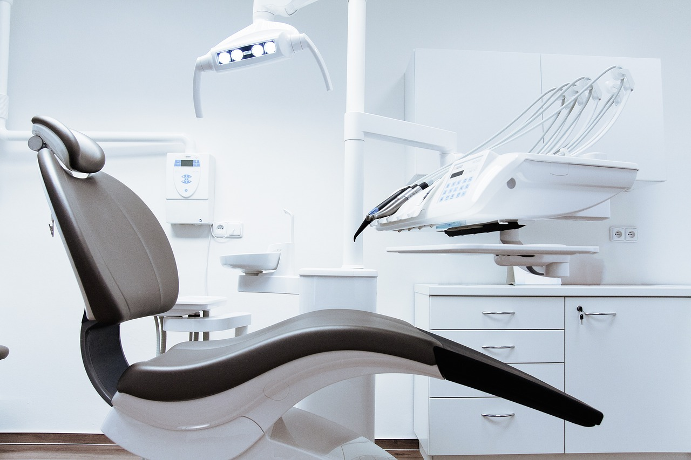

HERR DR. MED. UNIV. GRAZ MÜLLER
INFEKTIONSSPRECHSTUNDE montags - freitags in der Zeit von 11:30 - 12:30
Patienten, die Symptome eines grippalen Infektes (z.B. Husten, Halsschmerzen, Fieber, Gliederschmerzen etc.) oder Symptome eines Magen-Darm-Infektes (Erbrechen, Durchfall) aufweisen, werden gebeten, sich für diese Infektionssprechstunde vorher telefonisch anzumelden. Alle anderen Patienten dürfen zu ihrem Eigenschutz in der Zeit von 11:30 bis 12:30 unsere Praxis nicht betreten! Vielen Dank für Ihr Verständnis
Herzlich Willkommen auf der Homepage der Praxis Dr. med. Univ. Graz Müller
Wir sind eine allgemeinmedizinische Praxis und möchten Ihnen eine umfassende hausärztliche allgemeinmedizinische Medizin anbieten. Auf unseren Seiten geben wir Ihnen unter anderem einen Überblick über unsere Leistungen, die Ausstattung unserer Praxis und Sie haben die Möglichkeit, mit uns in Kontakt zu treten. Unsere Internetseiten werden regelmäßig aktualisiert und sind frei von Sponsoren. Die Navigation in unserem Angebot ist so gestaltet, dass die gewünschten Informationen schnell und mühelos aufgefunden werden können. Wenn Sie Fragen und Anregungen zum Aufbau und Inhalt unserer Seiten haben, zögern Sie nicht, uns darauf anzusprechen. Wir wünschen Ihnen viel Spaß auf unserer Homepage und verbleiben mit freundlichen Grüßen. Herr Dr. med. Univ. Graz Müller

Unsere Leistungen
Auf dieder Seitegeben wir Ihnen eine Überblick über unsere Leistungen
Die Praxis
Hier erhalten Sie einen kleinen Einblick in unsere Praxis, anhand einiger exemplarischer Fotos.
Das Praxisteam
Hier können Sie sich über unsere Mitarbeiter und deren Qualifikation informieren.
Kontakt
Eingehende E-mails werden zeitnah bearbeitet. Die E-Mailanfragen werden in der Praxis vertraulich behandelt, jedoch erfolgt eine ungeschützte Übermittlung der E-mails. Wir respektieren die ärztliche Berufsordnung, die die individuelle Beratung von Patienten, die der Ärztin bzw. dem Arzt nicht persönlich bekannt sind, untersagt und raten Ihnen, einen Termin zu vereinbaren/unsere Sprechstunde aufzusuchen.